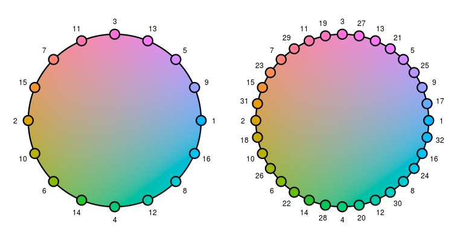

R/l_ColorList.R
l_setColorList.RdModify loon's color mapping list to a set of custom colors.
l_setColorList(colors)
| colors | vector with valid color names or hex-encoded colors |
|---|
There are two commonly used mapping schemes of data values to colors: one scheme maps numeric values to colors on a color gradient and the other maps nominal data to colors that can be well differentiated visually (e.g. to highlight the different groups). Presently, loon always uses the latter approach for its color mappings. You can use specialized color pallettes to map continuous values to color gradients as shown in the examples below.
When assigning values to a display state of type color then loon maps those values using the following rules
if all values already represent valid Tk colors (see
tkcolors) then those colors are taken.
if the number of distinct values are less than number of values in
loon's color mapping list then they get mapped according to the color list,
see l_setColorList and l_getColorList.
if there are more distinct values as there are colors in loon's color
mapping list then loon's own color mapping algorithm is used. See
loon_palette and for more details about the algorithm below
in this documentation.
Loon's default color list is composed of the first 11 colors from the hcl color wheel (displayed below in the html version of the documentation). The letters in hcl stand for hue, chroma and luminance, and the hcl wheel is useful for finding "balanced colors" with the same chroma (radius) and luminance but with different hues (angles), see Ross Ihaka (2003) "Colour for presentation graphics", Proceedings of DSC, p. 2 (https://www.stat.auckland.ac.nz/~ihaka/courses/787/color.pdf).
The colors in loon's internal color list are also the default ones listed
as the "modify color actions" in the analysis inspectors. To query and
modify loon's color list use l_getColorList and
l_setColorList.
In the case where there are more unique data values than colors in loon's color list then the colors for the mapping are taken from different locations distributed on the hcl color wheel (see above).
One of the advantages of using the hcl color wheel is that one can obtain any number of "balanced colors" with distinct hues. This is useful in encoding data with colors for a large number of groups; however, it should be noted that the more groups we have the closer the colors sampled from the wheel become and, therefore, the more similar in appearance.
A common way to sample distinct "balanced colors" on the hcl wheel is to
choose evenly spaced hues distributed on the wheel (i.e. angles on the
wheel). However, this approach leads to color sets where most colors change
when the sample size (i.e. the number of sampled colors from the wheel)
increases by one. For loon, it is desirable to have the first m
colors of a color sample of size m+1 to be the same as the colors in
a color sample of size m, for all positive natural numbers m.
Hence, we prefer to have a sequence of colors. This way, the colors on the
inspectors stay relevant (i.e. they match with the colors of the data
points) when creating plots that encode with color a data variable with
different number of groups.
We implemented such a color sampling scheme (or color sequence generator)
that also makes sure that neighboring colors in the sequence have different
hues. In you can access this color sequence generator with
loon_palette. The color wheels below show the color
generating sequence twice, once for 16 colors and once for 32 colors.

Note, for the inspector: If there are more unique colors in the data points than there are on the inspectors then it is possible to add the next five colors in the sequence of the colors with the +5 button. Alternatively, the + button on the modify color part of the analysis inspectors allows the user to pick any additional color with a color menu. Also, if you change the color mapping list and close and re-open the loon inspector these new colors show up in the modify color list.
When other color mappings of data values are required (e.g. numerical data
to a color gradient) then the functions in the scales
R package provide various mappings including mappings for qualitative,
diverging and sequential values.
l_setColorList, l_getColorList,
l_setColorList_ColorBrewer, l_setColorList_hcl,
l_setColorList_baseR
if(interactive()){ l_plot(1:3, color=1:3) # loon's default mapping cols <- l_getColorList() l_setColorList(c("red", "blue", "green", "orange")) ## close and reopen inspector l_plot(1:3, color=1:3) # use the new color mapping l_plot(1:10, color=1:10) # use loons default color mapping as color list is too small # reset to default l_setColorList(cols) } if (FALSE) { # you can also perform the color mapping yourself, for example with # the col_numeric function provided in the scales package if (requireNamespace("scales", quietly = TRUE)) { p_custom <- with(olive, l_plot(stearic ~ oleic, color = scales::col_numeric("Greens", domain = NULL)(palmitic))) } }